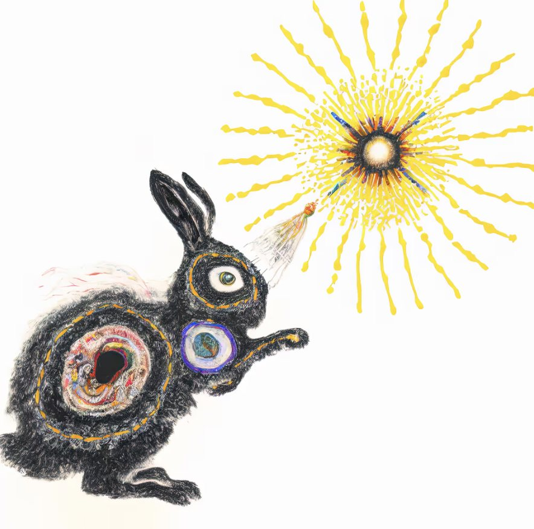
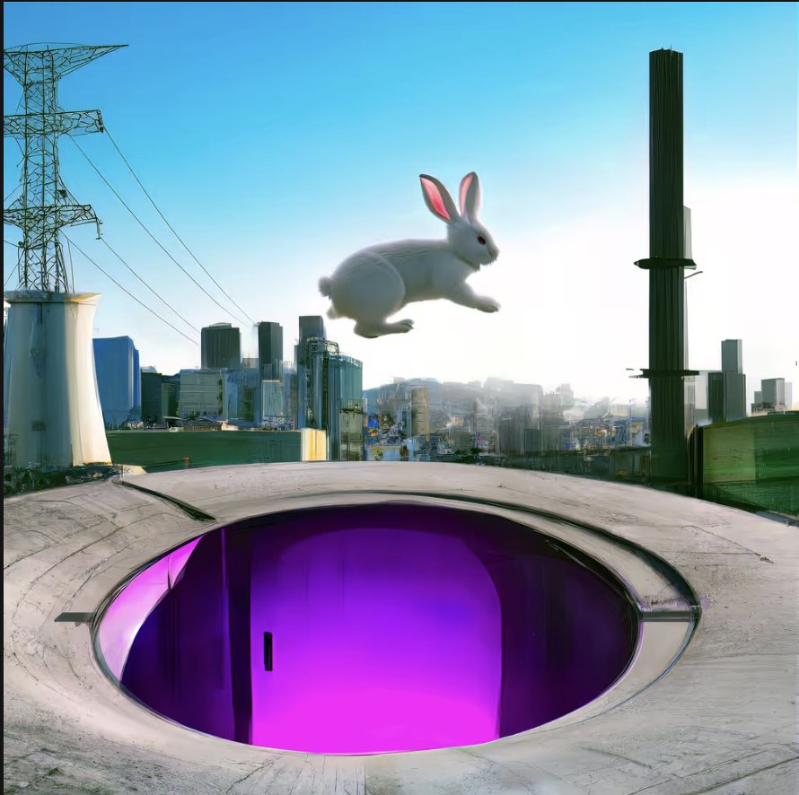
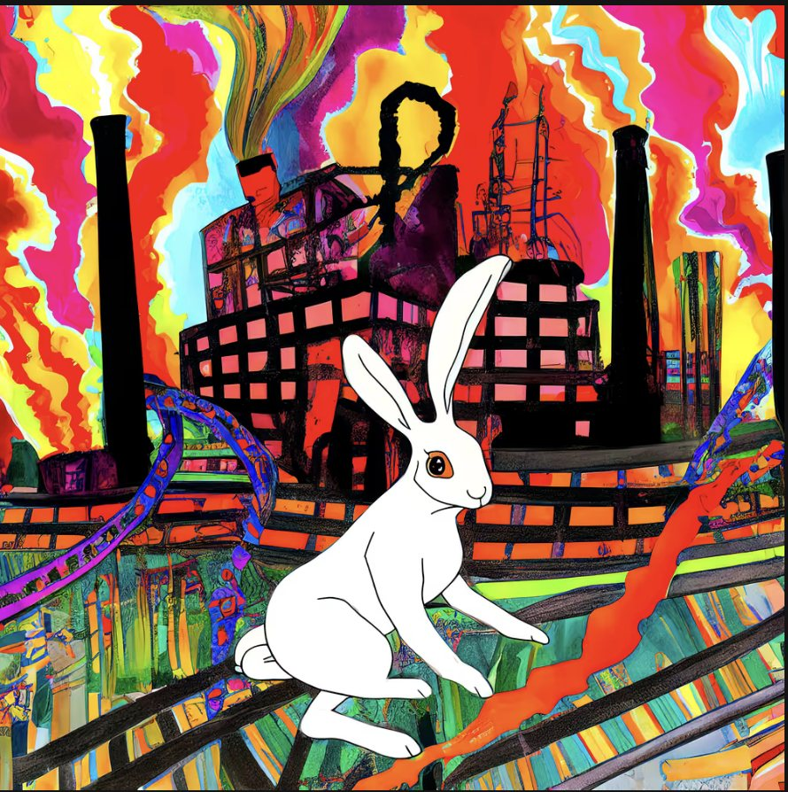
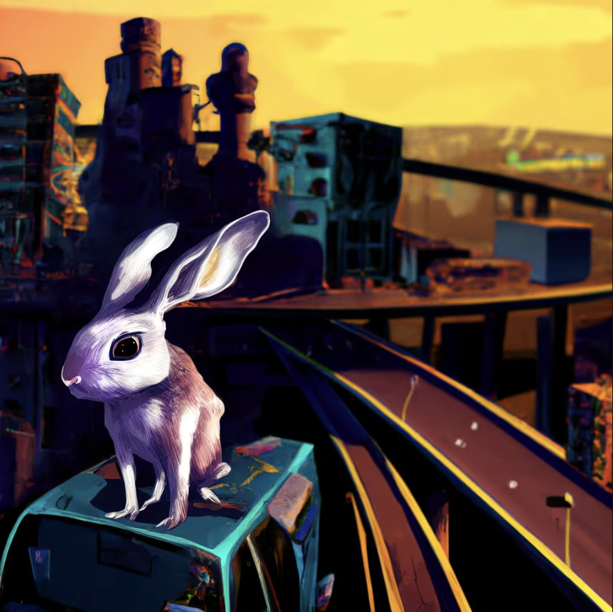

sovrn.art · Curated collection
by Anne Spalter
A lone rabbit is seen cavorting about in a post-armageddon world. Although it’s not clear exactly what transpired, scenes of abandoned factories hint at an industrially triggered climate disaster. Traveling through swirling trans-dimensional portals, the rabbit presides over scenes of mayhem and destruction. Evidence of the rabbit's role throughout history emerges in ancient documents, from Eastern block printing to Mughal Empire paintings to Medieval parchments, and mythic dot paintings. The rabbit has always been with us.
RABBIT TAKEOVER is based on my irascible, aggressive, much-loved pet rabbit Pickles, who sadly passed away as this was being developed.
Anne Spalter




Anne Spalter is a digital art pioneer known for surreal, sci-fi landscapes that merge traditional media with digital tools. Her work reimagines the sublime in futuristic visions of natural and built environments and is held in major collections including The Centre Pompidou, the Victoria & Albert Museum, and the AKG Museum of Art.
Spalter founded the first digital fine arts courses at Brown University and RISD and authored the seminal textbook The Computer in the Visual Arts. She co-curates Spalter Digital, a leading private collection of early computer art.
Featured in recent texts such as Digital Art: 20 Pioneers (Schiffer) and On NFTs (Taschen), she remains a prominent voice in the evolving conversation around digital art and culture.
View on Raster ↗annespalter.com ↗
RABBIT TAKEOVER, Anne Spalter. A curated collection on sovrn.art.